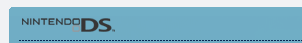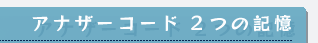 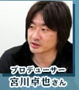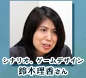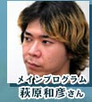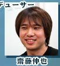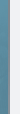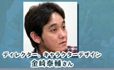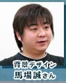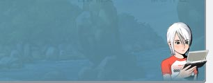 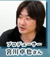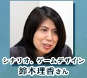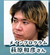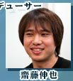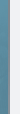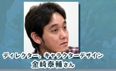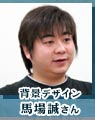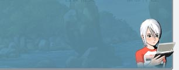
| 「アナザーコード」を制作した株式会社シングを訪ね、九州・福岡県にやって来ました。ＤＳという新ハードで繰り広げられる未体験のアドベンチャーゲームはどのように生まれたのでしょう！？ |
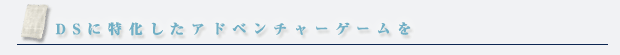
−まずはもう、今回なにがすごいって、謎解きが本当にすごいですよね！
良い意味で笑っちゃいました。
鈴木： ひたすらネタ出し会議をやりましたからね。実現不可能なアイデアも含め、案を出し続けました(笑)。
齋藤： 任天堂側もシングさんを訪問するときは、「おみやげ」として"ネタのアイデア"を必ず持っていったんです。
馬場： 『L-Rを連打して画像を交互に表示し、残像を浮かび上がらせて謎をとく』なんてアイデアをいただきましたね。ボツになったネタですけど。
吉良： ネタに関しては、ほとんど採用してもらえなかった・・(笑)。
−そうなんですか。私はコレ（※）が一番驚きだったんですけど、それではどなたのアイデアになるんでしょう？
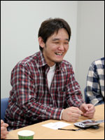金崎： コレ（※）ですね。それは宮川です。最初そのネタを聞いた時はみんな本当に驚きました。「こ、この人はなんてとんでもないことを考えるんだ！」と絶句して(笑)。
−謎が解けた時はものすごいショックを受けました。明け方プレイしてたんですが、思わず「ええええ!? そんな…！」と大声が(笑)。常識をはるかに超えた感がありますね。
金崎： そうでしょう！もう、うちの社長はすごいなあと本当に思いましたよ…。
吉良： 「さわれる推理小説」というキャッチコピーは、その言葉以上の意味を持ってるんですよね。ぜひ体験してほしいと思います。
※コレ…実際の会話では身振り手振りで表現されてました。ネタバレになるので詳しくはご紹介できないのですが。 |
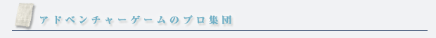
−では、ちょっと落ち着いたところで…。シングさんは元々アドベンチャーゲームを得意としている会社ですね。
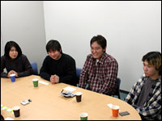宮川： はい。『アナザーコード』に関しては2004年の２月頃に企画を立ち上げまして、ニンテンドーＤＳ用にアドベンチャーを作ろうということになりました。任天堂さんに企画を持ちこんで、そこからスタートですね。アドベンチャーゲームはジャンルとして得意なので、これでいこうと。
吉良： 私はスタッフのこれまでの作品（※）を知ってましたので、その実績も踏まえてお願いしました。
鈴木： かつて自分の作品をプレイして下さっていた方が、もうスタッフとなっている年齢なんですが(笑)。でもここで原点に立ち返って、新鮮な気持ちで作りたかったんです。
−任天堂にはこれまで良質のアドベンチャーゲームを作っているというイメージがありますね。それだけにイメージをつぶせないというプレッシャーもあったんじゃないでしょうか。
鈴木： そうですね。任天堂さんからは久しぶりのアドベンチャータイトルということになりますし、これまでのイメージもあって、こちらとしてはプレッシャーでした。
金崎： でも、任天堂さんといい打ち合わせを重ねて行いましたし、長年アドベンチャーゲームを作ってきた宮川・鈴木の実績とノウハウもありましたので、結果的によい仕事はできたと思います。
※…宮川さん・鈴木さんは、パソコン用のアドベンチャーゲームで名作と呼ばれる
「Ｊ．Ｂ．ハロルドシリーズ」などを手がけてこられました。 |
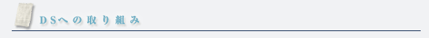
−ニンテンドーＤＳという特徴的なハードで、どのように企画は進みましたか？
吉良： ミーティング前半では、操作感と画面構成のことばかり話していましたね。
金崎： 僕はクォータービューでやりたいと、かたくなに言い張ってまして。
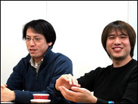吉良： ですが、クォータービューではタッチペンとの相性が悪いですし、3Dゲームが苦手な人も入りやすいように、トップビューの採用をお願いしました。2画面である意味も出てきますしね。
齋藤： そこはシングさん対任天堂の戦いでした(笑)。
金崎： 見た目をよくしたい、よく見せたいというのはあったんですが、ユーザーライクな所が抜け落ちてしまって。そこを任天堂さんがフォローして下さったんですよね。
−プログラムの面ではいかがですか？
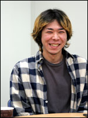萩原： ＤＳはタッチスクリーンをどう活かしていかに上手く使うかという部分が焦点ですよね。プログラマーがシステムを作っている時って自分の感性で作るんで、タッチペンの利用についてはその感性が活きたんじゃないかと思ってます。移動も、最初は十字キーのみで移動だったんですが、途中からタッチペンを使おうという案を出しました。
鈴木： 今回は２画面ということ、タッチスクリーンを使ったＤＳならではの謎解きを入れることが絶対条件でした。それだけでなく、これまでなら適当に終わらせていた部分も、改めてきちんとやっていこうと。プログラマーの負担はかなり大きかったと思いますよ。
−よくディレクターとプログラマーが衝突すると言いますが、その点はどうでした？
金崎： え、仲良かったよね(笑)。
萩原： …後半ちょっとケンカしましたけど(笑)。
−グラフィック部分に関してはいかがでしょう？
馬場： 初めＤＳの表示がどのくらいまで耐えうるのか、わからなかったんですね。でも作り込んでいったらまだ行けるんだ、まだ行けるんだ、というのがわかってきて。最後はもうカーテンなんかユラユラ動くまで作りこみましたね。
−金崎さんの描いたキャラクターと島のグラフィックはピッタリですね。
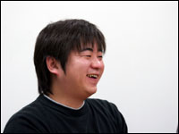馬場： 僕は金崎の絵のファンですから(笑)。「アナザーコード」の世界観を作り上げることにこだわりました。
金崎： 公式サイトに掲載してあるムービーも馬場が作成したのですが、「アナザーコード」の世界観がよく表現されていて、とても気に入っています。
馬場： これは金崎と話していて、映画の予告編のようなムービーにしたいねと。わざわざ音楽を作ったり、専用のイラストが入っていたりと入魂の作品です。よーく見ていると、作品を解くヒントも隠されていることがあるんです。特に後半の絵を見てもらいたいですね。１度クリアーした人なら「…ああ！」と思うシーンがあるはずですよ。 |
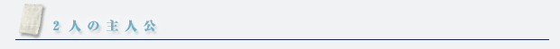
−金崎さんの描かれたキャラクターなんですけど、アシュレイを最初に見た時、私は男の子かなと思ったんです。これはあえて中性的なデザインにしてるんですか？
金崎： そうです。14歳って男か女か判りづらい部分があるじゃないですか。ファッションやスタイルもバランスよく描いて、男女どちらのユーザーさんからも受け入れられるように、という意識はありますよね。もっとも、口で言うのは簡単なのですが、実際はデザインを何パターンも描いているうちに、自分でも分からなくなってしまって任天堂さんに意見を頂きました(笑)。
齋藤： 確かに最終デザインが決まるまで時間がかかりましたよね。何度も打ち合わせをして調整していった結果、ギリギリのラインというか、絶妙なところに落ち着いたと思います。
鈴木： そういう意味では、実はアシュレイの年齢も調整したんです。初めは17歳だったんですが、大人からも子供からも不思議に感じられる微妙な年頃というのは低年齢化していて、現代で言うならそれは14歳じゃないのかなと。14歳は最近のトレンド、キーワードでもありますしね。
 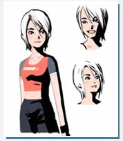 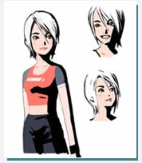 |
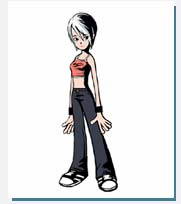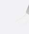 |
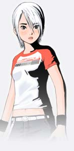 |
−もう１人の主人公とも言うべき"ディー"ですが。
鈴木： やはりナビゲーターは必要だと思うんです。今回それは誰が適任かと言えば、彼女の目線で話せるパートナーだろうと。アシュレイだったらディーかなという感じで、自然に生まれました。ゴーストだけど、どの国の人が見てもわかる素材ということで、記憶のない少年になって。
−ゴーストがパートナーというと、ちょっと驚きますよね。
金崎： 『２つ』という多動性、多様性を表現したかったんです。ストーリー上で人が死んだり別れるっていうのは、その事象そのものが面白いのではなくて、それをドラマの一部としてとして楽しむっていうことですよね。決して不快な現象ではないと。そういう風に描けるのがアドベンチャーゲームの可能性だと思います。
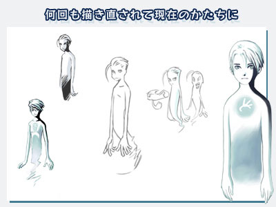
|
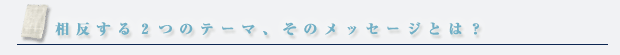
−実際にプレイした人からの反響はいかがでしょう。
齋藤： デバッグチームの反応ですが、みんな仕事なのに本当に楽しそうに遊んでいたのが強く印象に残っています。オリジナルのサイドストーリーまで作ってしまうスタッフもいて、これにはビックリしました(笑)。
金崎： 当初、世界観にどうやって入り込んでもらうかが課題だっただけに、この評価を聞いた時はとても嬉しかったです。物語としてはハートウォーミングなものですが、そこに相反するサスペンスというテーマを上手く絡めることができた結果かなと。
鈴木： リアルさ・痛々しさを感じさせないサスペンスという、普通とは違った魅力も出せていると思います。強すぎる悲壮感がない分、キャラクターへの感情移入もしやすいのではないでしょうか。
吉良： なぜか船長ファンも多いですしね。ゲーム内で36枚写真が撮れるんですが、全部船長の写真ばかりだったという人もいて・・(笑)。
−それじゃ、ゲームが進まない(笑)。船長は言葉少なながら、深いことを語ったりしますよね。こちらが考えてしまうような。
鈴木： 無理して14歳のセリフを書くよりは、自分の年齢に近いオヤジのセリフの方がよく書けるんですよ(笑)。
−ゲーム中のメッセージ性をどう受け取るかは、プレイヤーによって違っていいんでしょうか。
金崎： そこはやはりお任せです。
齋藤： ユーザーに対して突き放す部分があっていいと思ったんです。全部が自分に委ねられていて、自分で考えなくてはならないっていう。
吉良： 今回は「親切に突き放す」という感じですね(笑)。 |
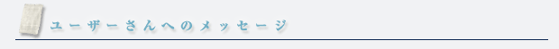
− では、ユーザーの皆さんへメッセージをお願いします。
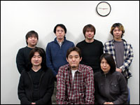萩原： ２画面・タッチスクリーンを使ったアドベンチャーゲームとしては、かなり上手い具合に全てが融合していると思います。謎解きはタッチスクリーンの操作で色々できることがあるので、ぜひそこを楽しんで欲しいです。
馬場： アドベンチャーでここまで背景をがんばってるのは初めてかと思います。皆さんにも、僕が感じた『アナザーコード』の世界を感じていただきたいです。そして、主人公の成長を見て「ああ、いいものを見たなあ」と感じてくれたらとっても嬉しいです。
吉良： 新しい要素ばかりなのですが、パッと見は懐かしい印象のするゲームです。最近ゲームをしていない人、昔はアドベンチャーゲームやったよという人に楽しんで遊んでいただきたいですね。
齋藤： プレイヤーの方には「遊んで良かった」と思っていただける作品に仕上がったと思います。ミステリーなんですが、感動するものになっています。楽しんで遊んで下さい。
金崎： キャラクターに共感してもらえると嬉しいです。アシュレイと同年代の人たちへのメッセージが織り込まれていますから、そういう人たちにもぜひ遊んで欲しいですね。そして、"ＤＳならでは"という部分を楽しんで下さい。
鈴木： 新しいハードで新作をお届けできたことが、とても幸せです。これは１度クリアーして終わりではなく、２回以上プレイしないと謎の全貌はわかりません。やればやるほど理解度が深まるので、ぜひ何度も楽しんで下さいね。
宮川： 最後まで遊んで、楽しんでいただきたいです。きっと印象に残るゲームだと思います。
−ありがとうございました！ |
|